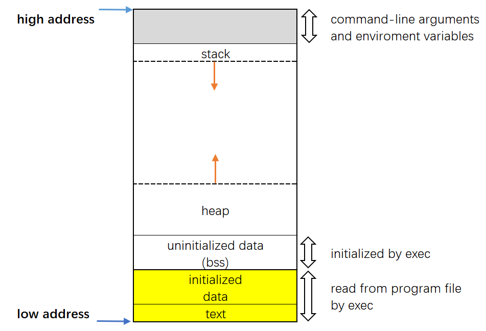
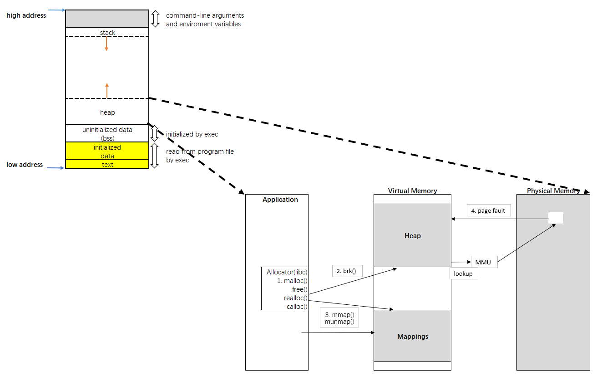

Memory Layout of C Programs
A typical memory representation of C program consists of following sections.
- Text segment
- Initialized data segment
- Uninitialized data segment
- Stack
- Heap
A typical memory layout of a running process

Text Segment
A text segment , also known as a code segment or simply as text, is one of the sections of a program in an object file or in memory, which contains executable instructions.
As a memory region, a text segment may be placed below the heap or stack in order to prevent heaps and stack overflows from overwriting it.
Usually, the text segment is sharable so that only a single copy needs to be in memory for frequently executed programs, such as text editors, the C compiler, the shells, and so on. Also, the text segment is often read-only, to prevent a program from accidentally modifying its instructions.
Initialized Data Segment
Initialized data segment, usually called simply the Data Segment. A data segment is a portion of virtual address space of a program, which contains the global variables and static variables that are initialized by the programmer.
Note that, data segment is not read-only, since the values of the variables can be altered at run time.
This segment can be further classified into initialized read-only area and initialized read-write area.
For instance the global string defined by char s[] = “hello world” in C and a C statement like int debug=1 outside the main (i.e. global) would be stored in initialized read-write area. And a global C statement like const char* string = “hello world” makes the string literal “hello world” to be stored in initialized read-only area and the character pointer variable string in initialized read-write area.
Ex: static int i = 10 will be stored in data segment and global int i = 10 will also be stored in data segment.
Uninitialized Data Segment
Uninitialized data segment, often called the “bss” segment, named after an ancient assembler operator that stood for “block started by symbol.” Data in this segment is initialized by the kernel to arithmetic 0 before the program starts executing
uninitialized data starts at the end of the data segment and contains all global variables and static variables that are initialized to zero or do not have explicit initialization in source code.
For instance a variable declared static int i; would be contained in the BSS segment.
For instance a global variable declared int j; would be contained in the BSS segment.
Stack
The stack area traditionally adjoined the heap area and grew the opposite direction; when the stack pointer met the heap pointer, free memory was exhausted. (With modern large address spaces and virtual memory techniques they may be placed almost anywhere, but they still typically grow opposite directions.)
The stack area contains the program stack, a LIFO structure, typically located in the higher parts of memory. On the standard PC x86 computer architecture it grows toward address zero; on some other architectures it grows the opposite direction. A “stack pointer” register tracks the top of the stack; it is adjusted each time a value is “pushed” onto the stack. The set of values pushed for one function call is termed a “stack frame”; A stack frame consists at minimum of a return address.
Stack, where automatic variables are stored, along with information that is saved each time a function is called. Each time a function is called, the address of where to return to and certain information about the caller’s environment, such as some of the machine registers, are saved on the stack. The newly called function then allocates room on the stack for its automatic and temporary variables. This is how recursive functions in C can work. Each time a recursive function calls itself, a new stack frame is used, so one set of variables doesn’t interfere with the variables from another instance of the function.
Heap
Heap is the segment where dynamic memory allocation usually takes place.
The heap area begins at the end of the BSS segment and grows to larger addresses from there.The Heap area is managed by malloc, realloc, and free, which may use the brk and sbrk system calls to adjust its size (note that the use of brk/sbrk and a single “heap area” is not required to fulfill the contract of malloc/realloc/free; they may also be implemented using mmap to reserve potentially non-contiguous regions of virtual memory into the process’ virtual address space). The Heap area is shared by all shared libraries and dynamically loaded modules in a process.
The size(1) command reports the sizes (in bytes) of the text, data, and bss segments.
Example
Check the following simple C program
1
2
3
4
5
6
7
8
9
10
11#include <stdio.h>
int main(void)
{
return 0;
}
ubuntu@ip-172-31-42-139:~/coding$ gcc -O0 ./memory-layout.c -o memory-layout
ubuntu@ip-172-31-42-139:~/coding$ size memory-layout
text data bss dec hex filename
1099 544 8 1651 673 memory-layoutLet us add one global variable in program, now check the size of bss (highlighted in red color)
1
2
3
4
5
6
7
8#include <stdio.h>
int global; /* Uninitialized variable stored in bss*/
int main(void)
{
return 0;
}Let us add one static variable which is also stored in bss
1
2
3
4
5
6
7
8
9#include <stdio.h>
int global; /* Uninitialized variable stored in bss*/
int main(void)
{
static int i; /* Uninitialized static variable stored in bss */
return 0;
}Let us initialize the static variable which will then be stored in Data Segment (DS)
1
2
3
4
5
6
7
8
9#include <stdio.h>
int global; /* Uninitialized variable stored in bss*/
int main(void)
{
static int i = 100; /* Initialized static variable stored in DS*/
return 0;
}Let us initialize the global variable which will then be stored in Data Segment (DS)
1
2
3
4
5
6
7
8
9#include <stdio.h>
int global = 10; /* initialized global variable stored in DS*/
int main(void)
{
static int i = 100; /* Initialized static variable stored in DS*/
return 0;
}
Heap Details
Heap Zoom In

When malloc size is less than M_MMAP_THRESHOLD, which could set by mallopt(), brk() will be used, otherwise mmap() will be used. With brk() the memory blocks are not immediately returned to system, the C library aggregates them until a sufficiently large, contiguous chunk can be freed at once.
Reference
x86 Architecture
Advanced Memory Allocation
Anatomy of a Program in Memory
How The Kernel Manages Your Memory
Memory Translation and Segmentation